INPUT & OUTPUT DEVICES
Bài 1 — Thiết bị vào – ra
A COMPUTER WORKS WITH INFORMATION IN FOUR PARTS.
Máy tính xử lí thông tin nhờ bốn thành phần.
- Input device · thiết bị vào
- Processor · bộ xử lí
- Memory · bộ nhớ
- Output device · thiết bị ra
Today we look closely at the input and output devices.
Hôm nay ta tìm hiểu kĩ thiết bị vào và thiết bị ra.
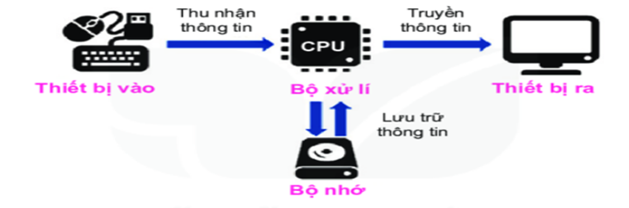
Which one brings sound into the computer? Which one sends sound out?
Thiết bị nào đưa âm thanh vào máy tính? Thiết bị nào phát âm thanh ra?
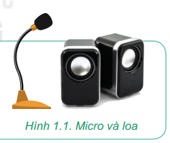
Sends data and commands into the computer.
Đưa dữ liệu và lệnh vào máy tính.
- Keyboard, mouse, microphone · bàn phím, chuột, micro
- Scanner, camera · máy quét, camera
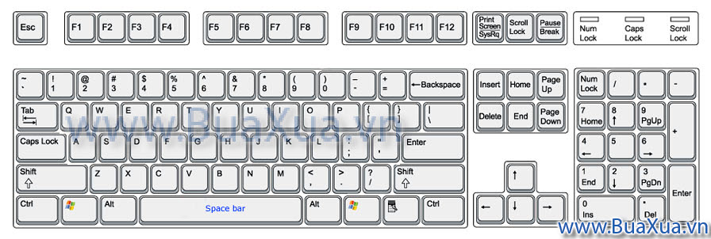
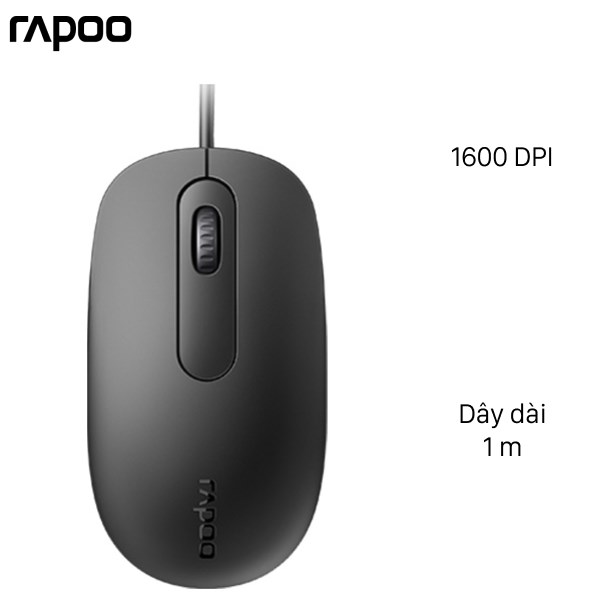
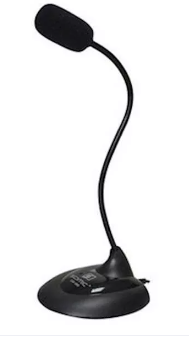
Sends information out for people to see or hear.
Đưa thông tin từ máy tính ra để con người nhận biết.
- Monitor, projector · màn hình, máy chiếu
- Printer, speakers · máy in, loa
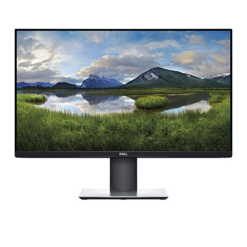
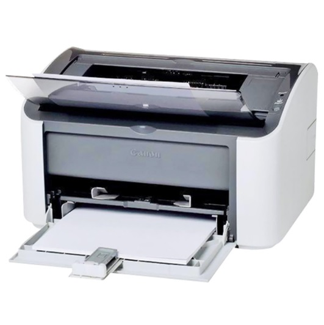
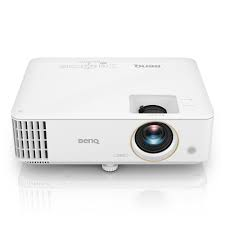
SORT THESE DEVICES: input or output?
Xếp mỗi thiết bị vào nhóm: thiết bị vào hay thiết bị ra? Nêu dạng thông tin nó xử lí.
WHICH TYPE IS IT?
Projector · máy chiếu
OUTPUT · thiết bị ra — shows the computer screen on a wall (hình ảnh)Game controller · bộ điều khiển game
INPUT · thiết bị vào — sends commands to control the game (lệnh)ONE DEVICE, TWO JOBS.
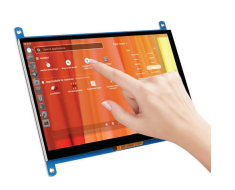
Touch screen · màn hình cảm ứng
INPUT + OUTPUT · vừa vào vừa ra — it shows content and senses your fingerTouchpad on a laptop · tấm cảm ứng
INPUT · thiết bị vào — works like a mouse (thay cho chuột)SOME DEVICES ALSO STORE AND PROCESS DATA.
Một số thiết bị vào – ra còn lưu trữ và xử lí dữ liệu.
- Smart speaker · loa thông minh — nghe lệnh, xử lí, trả lời bằng giọng nói
- Digital camera · máy ảnh số — chụp, lưu và chỉnh ảnh, video
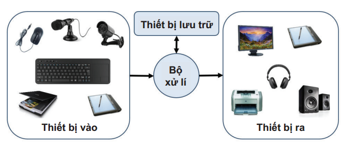
Data flows: input → processor ⇄ memory → output. Dữ liệu đi: thiết bị vào → bộ xử lí ⇄ bộ nhớ → thiết bị ra.
- Thiết bị vào (input device): đưa dữ liệu và lệnh vào máy tính.Ví dụ: bàn phím, chuột, micro, máy quét, camera.
- Thiết bị ra (output device): đưa thông tin từ máy tính ra để con người nhận biết.Ví dụ: màn hình, máy in, loa, máy chiếu.
- Thiết bị vào – ra có nhiều loại, hình dạng, công dụng khác nhau.Có loại vừa vào vừa ra (màn hình cảm ứng); có loại còn lưu trữ, xử lí dữ liệu (loa thông minh, máy ảnh số).
Thiết bị vào → Bộ xử lí ⇄ Bộ nhớ → Thiết bị ra
1 · A digital camera puts what kind of data into the computer?
Máy ảnh nhập dữ liệu dạng nào vào máy tính?
C — Images. A camera captures pictures. Máy ảnh thu hình ảnh vào máy tính.
USING DEVICES SAFELY
An toàn thiết bị
A computer uses electricity and connects to many devices —
careless actions can damage them.
Máy tính dùng điện và nối nhiều thiết bị — thao tác bất cẩn có thể làm hỏng thiết bị.
Match each plug (a–f) to the right port (1–8).
Ghép mỗi đầu nối a–f với đúng cổng 1–8.
Same-looking ports can do different jobs — forcing a wrong plug can damage it. Cổng nhìn giống nhau vẫn khác chức năng; cố cắm nhầm có thể làm hỏng thiết bị.
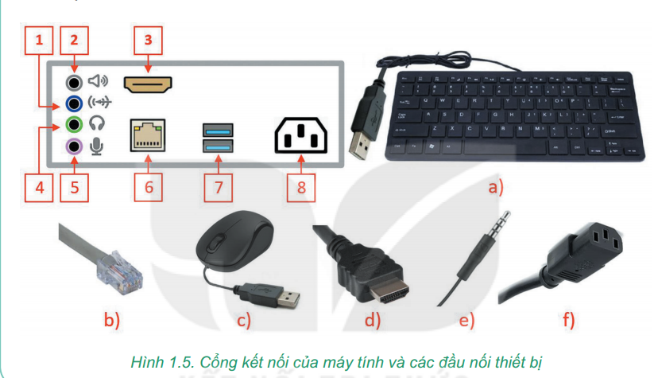
Plug in the power cable before or after connecting the devices?
Cắm dây nguồn trước hay sau khi nối các thiết bị?
Cấp nguồn điện sau khi đã cắm xong mọi thiết bị — để tránh điện giật và xung điện làm hỏng thiết bị.
WHEN YOU USE A COMPUTER…
DO · Nên
- Read the maker's guide first · đọc kĩ hướng dẫn nhà sản xuất
- Keep hands dry and clean · giữ tay khô, sạch
- Turn off with Shut down · tắt máy bằng Shut down
DON'T · Không nên
- Food or drinks near the keyboard · để đồ ăn, uống gần bàn phím, chuột
- Touch the screen with sharp objects · chạm màn hình bằng vật sắc nhọn
- Cut the power suddenly to switch off · ngắt điện đột ngột để tắt máy
Three kinds of safety: the user, the device, the data. Ba mặt an toàn: người dùng – thiết bị – dữ liệu.
- Kết nối thiết bị đúng cổng, không dùng lực mạnh; cấp nguồn điện sau khi đã cắm xong mọi thiết bị.
- Nên: đọc kĩ hướng dẫn nhà sản xuất; tay khô, sạch; gõ phím nhẹ, dứt khoát; tắt máy bằng Shut down.
- Không nên: để đồ ăn, uống gần bàn phím, chuột; chạm màn hình bằng vật sắc nhọn; ngắt điện đột ngột để tắt máy.
- Ba mặt an toàn khi dùng máy tính: sức khoẻ người dùng – thiết bị – dữ liệu.
A headset with a built‑in microphone is a…
Bộ tai nghe có gắn micro dùng cho máy tính là loại thiết bị gì?
C — tai nghe đưa âm thanh ra, micro đưa âm thanh vào.

Put these steps in order to switch off safely.
Máy đang mở một tệp trên thẻ nhớ. Sắp xếp các bước để tắt máy an toàn, không mất dữ liệu.
Lưu tệp → đóng tệp → ngắt thẻ nhớ an toàn → Shut down.
THINK LIKE THIS…
- A person stands in front of a security camera. Do they know you are watching? Why? Người đứng trước camera an ninh có biết em đang theo dõi không? Vì sao?
- A printer prints strange symbols because of a virus. Clean the virus on the printer or the computer? Máy in in ra kí hiệu lạ do virus — diệt virus ở máy in hay máy tính?
- Suggest 4+ rules for using the computer lab safely. Đề xuất ít nhất 4 quy tắc sử dụng phòng máy an toàn, hiệu quả.
1 — No; a camera is only an input device. 2 — On the computer; a printer is an output device and does not store or process data. Camera chỉ là thiết bị vào; máy in là thiết bị ra, không lưu trữ, xử lí dữ liệu.
TODAY I LEARNED…
- Input devices bring data in; output devices send information out.Thiết bị vào đưa dữ liệu vào; thiết bị ra đưa thông tin ra.
- Devices are diverse — some do both jobs, some also store and process.Thiết bị rất đa dạng — có loại vừa vào vừa ra, có loại còn lưu trữ, xử lí.
- Use devices safely: right port, power last, Shut down.Dùng thiết bị an toàn: đúng cổng, cấp nguồn sau cùng, tắt bằng Shut down.
What can you explain to a Grade 6 student now? Em có thể giải thích cho một bạn lớp 6 điều gì?